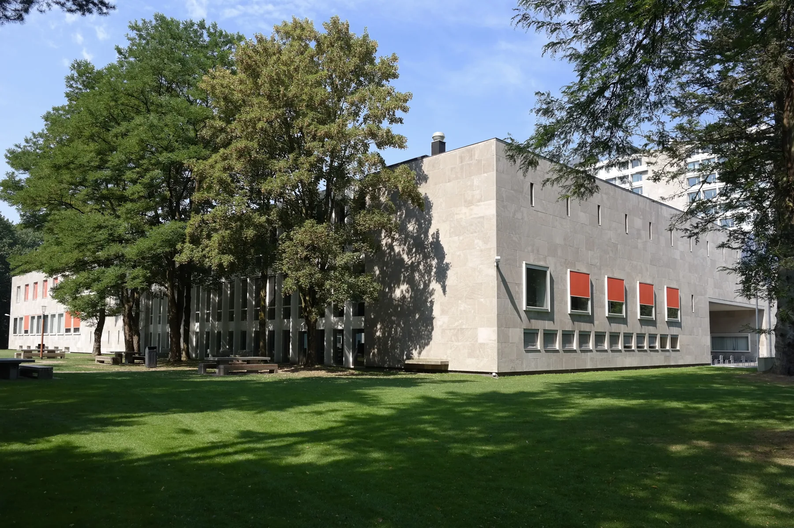

Venue & Accommodation
Venue
Emotions 2027 will be held on the beautiful green campus of Tilburg University, located in the heart of the Netherlands and easily accessible by public transportation.
The conference sessions will take place in the Cobbenhagen Building, one of Tilburg University’s most distinctive venues. The building offers modern conference facilities while preserving its characteristic architectural atmosphere.

Cobbenhagen Building · Photo: Choinowski / Wikimedia Commons · CC BY-SA 4.0. Resized and compressed for the web.

View Cobbenhagen Building information →
Getting to Tilburg
By train
Tilburg University has its own railway station, Tilburg Universiteit. Detailed local travel guidance will be added closer to the conference.
International travel
Travel recommendations from the main Dutch and nearby international airports will be published together with the practical conference information.
Accommodation
A selection of hotels offering special conference rates will be listed on this page. Information about accommodation options, booking procedures, and travel recommendations will become available closer to the conference.